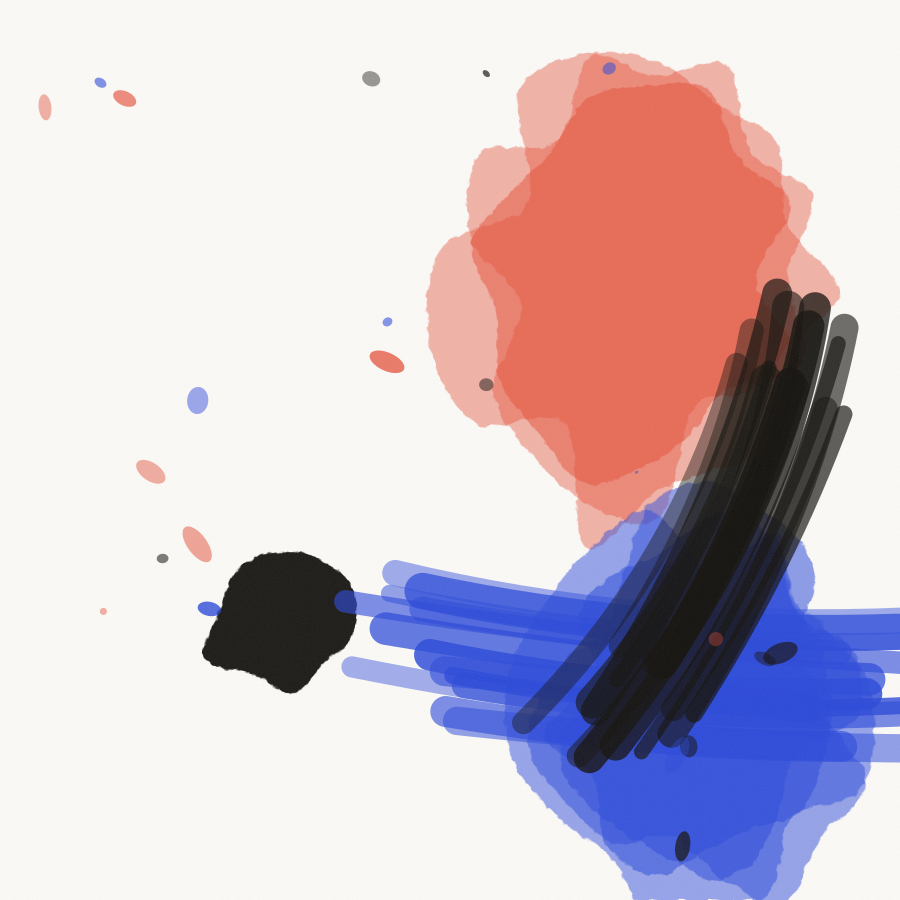
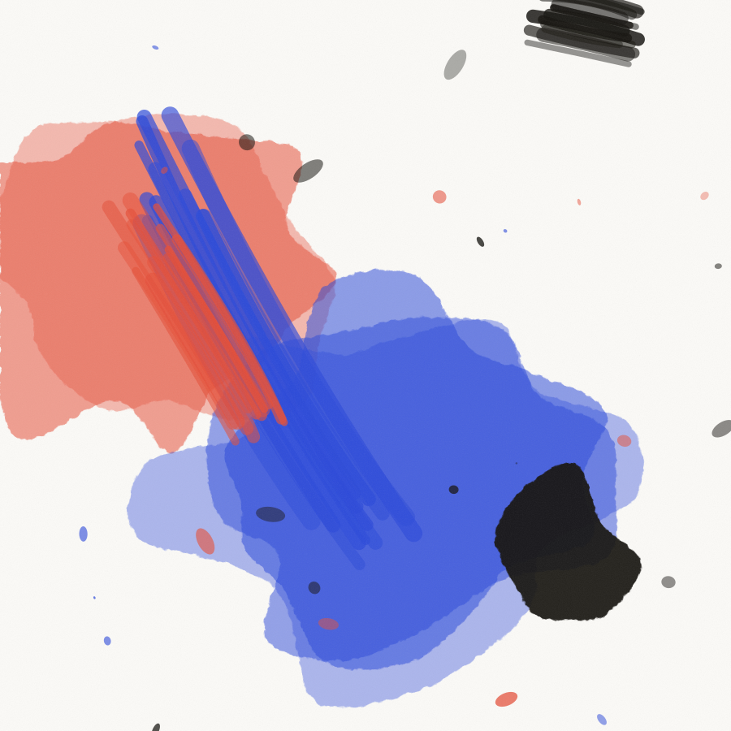
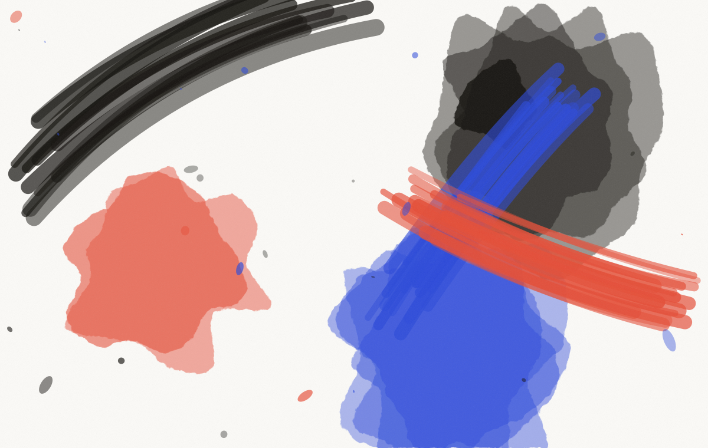

Projet 01 · Identité mouvante · 2026
Vingt disques par an, vingt directions artistiques différentes, et personne qui identifie le label dans un bac de disquaire.
Client
Fracas, label indépendant, Berlin
Année
2026
Durée
Onze semaines
Périmètre
Identité mouvante, système de pochettes, manuel, site
Équipe
Nour Bensalem, Théo Vanier, Lila Okonkwo
Développement
Ouest Studio, Nantes
Un logo qui ne reste jamais le même
Fracas sort entre dix-huit et vingt-deux disques par an depuis une cave de Neukölln. Techno, ambient, deux incursions ratées dans le jazz. Le label existait depuis six ans avec une typo trouvée sur un forum en 2019 et un logo refait par chaque artiste selon son humeur.
Leur problème n’était pas l’incohérence. C’était qu’on ne reconnaissait pas un disque Fracas dans un bac, alors que les trois disquaires qu’on a interrogés les décrivaient tous avec les mêmes mots : sec, brutal, précis.
La question est donc devenue : comment garder la liberté que les artistes exigeaient, et rendre le label identifiable à trois mètres ?


Trois états du bloc. La forme ne bouge pas, tout le reste si.
La réponse : un bloc, pas un logo
On a abandonné l’idée du logotype. À la place, un bloc de proportion fixe, toujours placé au même endroit, toujours à la même taille relative. Ce qu’il contient appartient à l’artiste. La couleur, la matière, la photo, le bruit.
Le nom se compose dans une graisse unique d’un caractère grotesque très large, coupé sur deux lignes, sans exception possible. C’est la seule règle qu’on ne négocie pas. Elle tient sur une page du manuel.

Les épreuves de pochettes, en train de sécher à l’atelier.
Ce qu’on a livré
Système
Le bloc, ses quatre positions autorisées, la grille de pochette en 12,5 cm et la déclinaison numérique en 3000 px.
Caractère
Une licence perpétuelle négociée directement avec la fonderie, plus un jeu de chiffres redessinés pour les numéros de catalogue.
Manuel
Dix-huit pages. Envoyé à chaque artiste avec le contrat. Depuis, plus personne ne demande une dérogation.
Site
Une page unique, le catalogue en liste, le lecteur en bas d’écran. Conçu par nous, développé par Ouest Studio.
Ce que ça a changé
Dix-neuf disques sont sortis depuis la bascule. Les deux disquaires de Berlin qui les rangeaient dans le bac générique leur ont donné un intercalaire au nom du label. Ce n’est pas une métrique, mais c’est exactement ce qu’ils voulaient.
Les ventes directes sur leur site ont doublé sur douze mois. Ils vendaient déjà bien. On ne s’attribue pas le mérite d’une bonne année de sorties.
On avait peur que ça nous enferme. En fait, ça a mis tout le monde d’accord en une réunion.
Ines Kessler, fondatrice de Fracas

Projet suivant
Voir le projet →